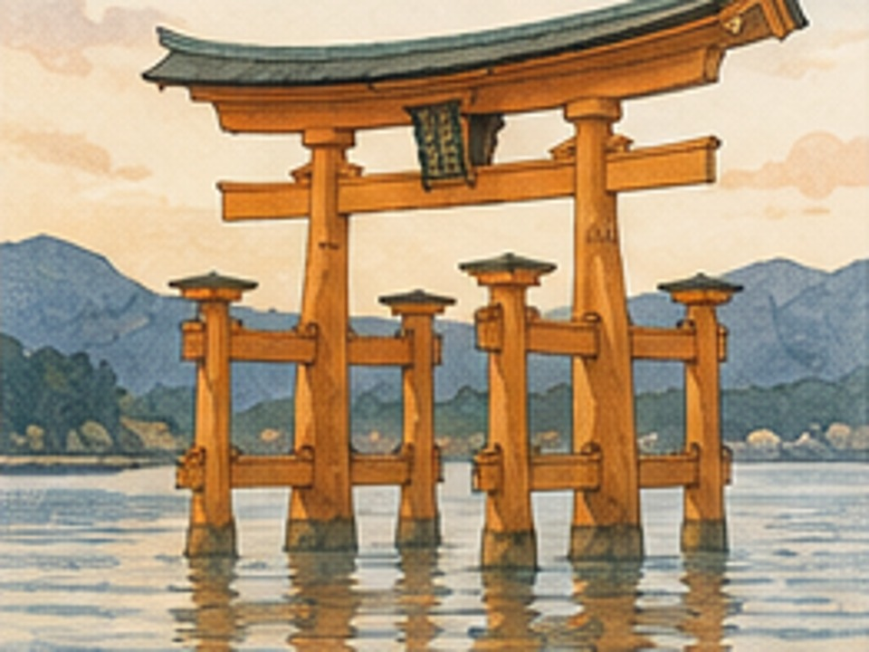

宮島
Miyajima
Il torii che sembra galleggiare

Dove siamo
Nella baia di Hiroshima, nel Giappone occidentale.
Lo sapevi che?
Miyajima è celebre per il grande torii del santuario di Itsukushima, che con l’alta marea sembra emergere direttamente dal mare.
Perché è speciale
L’isola è considerata da secoli un luogo sacro.
Una parola giapponese
海 — umi
Mare
La domanda del viaggiatore
Cosa sembra fare il grande torii di Miyajima con l’alta marea?
✓ Tappa completata
← Torna al viaggio